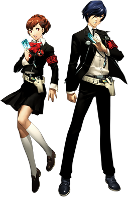
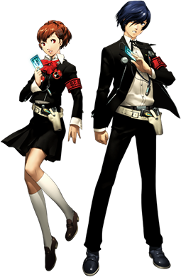
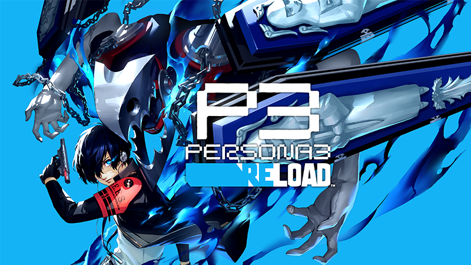
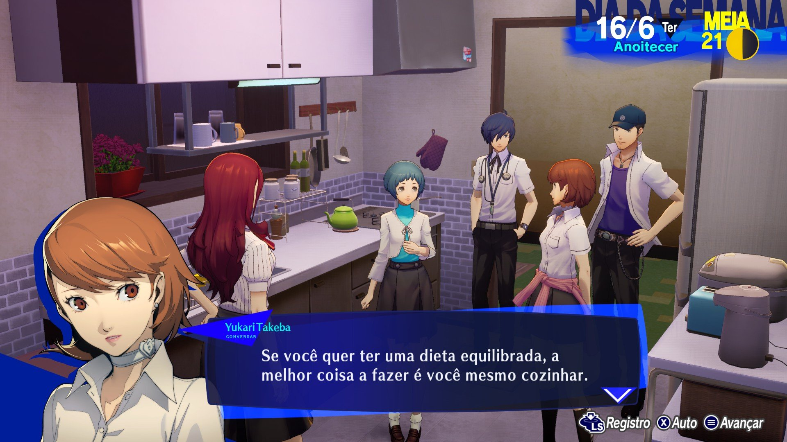
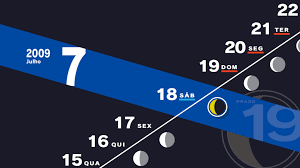
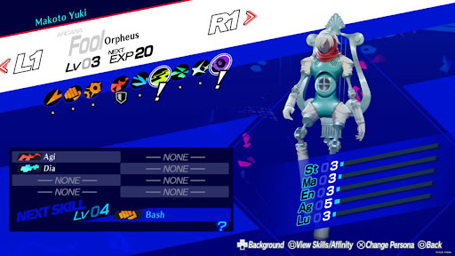
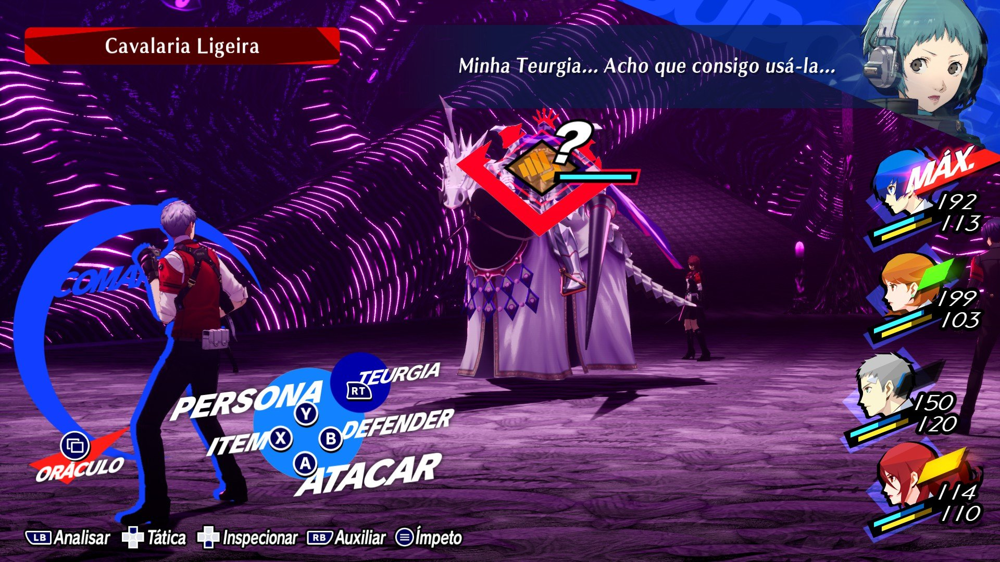
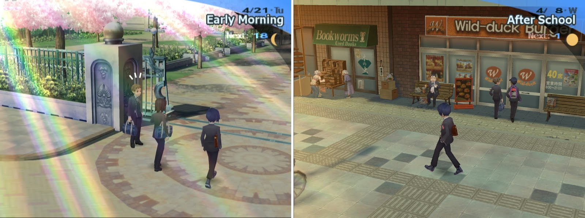
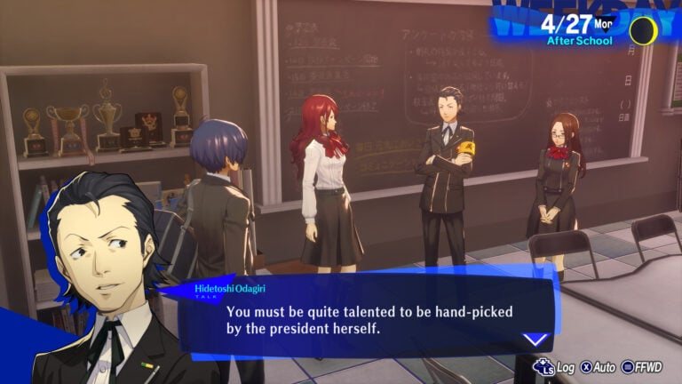

Sobre o Jogo
Persona 3 é um RPG desenvolvido pela Atlus. Lançado em 2006 para o PlayStation 2, o jogo segue a história de um grupo de estudantes que têm a capacidade de invocar manifestações psicológicas de seus espíritos, conhecidas como "Personas".
O jogo é conhecido por sua mistura única de elementos de simulação de vida cotidiana, explorando dungeons e combate por turnos.
 

História
Em Persona 3, o jogador controla um estudante transferido para a Academia Gekkoukan, localizada na fictícia cidade de Iwatodai. O protagonista descobre que tem a habilidade de invocar Personas e se junta a um grupo especial chamado "SEES" (Specialized Extracurricular Execution Squad) para combater criaturas misteriosas conhecidas como Shadows.
A história se desenrola ao longo de um ano escolar, com eventos que ocorrem durante o dia e à noite. O jogador deve equilibrar a vida escolar com exploração de dungeons e batalhas contra as Shadows, enquanto descobre os segredos por trás da Dark Hour, uma hora misteriosa que ocorre todas as noites.
Sistema de Tempo
Persona 3 apresenta um sistema de tempo dinâmico, onde os jogadores precisam gerenciar suas atividades diárias entre a vida escolar, interações sociais e exploração de dungeons durante a Dark Hour. Durante o jogo, o tempo avança constantemente, e cada atividade consome uma quantidade específica de tempo, exigindo planejamento estratégico para maximizar o progresso do personagem.
 Personas e Arcanas
Um dos elementos centrais de Persona 3 são os Personas, manifestações psicológicas dos personagens que são invocadas durante as batalhas. Cada Persona está associada a um Arcana, que representa diferentes aspectos da personalidade e fornece benefícios específicos durante a jornada do jogador. Os Personas são essenciais para enfrentar as Shadows durante as incursões nas dungeons.
Exploração de Dungeons
Os jogadores exploram dungeons conhecidas como Tartarus durante a Dark Hour, um período de tempo misterioso que ocorre todas as noites. Tartarus é uma torre que se estende verticalmente com vários andares, cada um com seus próprios desafios e inimigos. Os jogadores devem enfrentar Shadows e encontrar os chefes de cada bloco para progredir na história.

Combate por Turnos Estratégico
As batalhas em Persona 3 ocorrem em turnos e exigem estratégia e planejamento cuidadosos. Os jogadores devem aproveitar os pontos fracos dos inimigos, escolher as habilidades certas dos Personas e coordenar as ações dos membros do grupo para maximizar a eficácia durante o combate. Gerenciar o SP (Pontos de Habilidade) também é crucial, pois as habilidades consomem essa energia limitada.
Temática Psicológica e Existencial
Persona 3 explora temas psicológicos e existenciais profundos ao longo de sua narrativa. Questões sobre a natureza da identidade, mortalidade e o significado da vida são exploradas através dos eventos que os personagens enfrentam durante o jogo. Esses elementos adicionam uma dimensão filosófica à experiência, tornando-a cativante para jogadores interessados em narrativas mais profundas.

Social Links e Interações Sociais
Persona 3 introduziu o sistema de Social Links, que permite aos jogadores desenvolver relacionamentos com uma variedade de personagens não jogáveis ao longo do jogo. Construir esses laços sociais não só oferece vantagens em batalha, mas também aprofunda a narrativa, revelando mais sobre os personagens e adicionando camadas à experiência do jogador.
